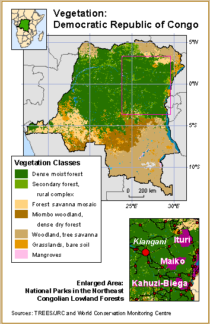

Web Mapping Quick Start
Wifi: Mapbox Guest // longitudelatitude
To follow along, go to danswick.com/web-map-quickstart/spring2018/class4
AGENDA
- Recap last week's class
- Putting it all together to tell a story: let's make a map together!
- üó£ Information design for web maps
- üó£ Planning your web map
- Planning our map together
- üõ† Let's build that map!
- Wrap up!
Let's recap
homework:
- Show and tell! Find a cool web map online and bring the link with you next week. What type of web map it is and why do you think it's cool? How does it use interactions effectively and ineffectively?
- Using Leaflet, create a web map that uses a type of interactivity we haven't built thus far in code. There are lots of great tutorials just a Google search away! Bring your map to class next week to share with the group. Maybe a hover interaction? How about a go-to-my-location button?
- For your class journal: What are events? What are some different kinds of interactions? How can interactions be overused in today's web mapping libraries?
Today's class is all about putting it all together to tell a story with a web map.
Today we're going to work together to make a map for the City. Here's our (theoretical) prompt:
The SF Dept of Public Health has a new program to help struggling restaurant owners get their restaurants up to code. They've asked us to help them prioritize where to allocate their resources.
Our
tools of the trade:
- Sublime text
- The SF open data portal
- Leaflet
- Turf.js
- Our browsers!
Throughout this class, we'll plan our map, gather and prep our data, and code a working demo to present to the city.
Information design for web maps
In print or on the web, maps are information design.
Cartographers have been thinking about how to do that effectively in print for hundreds of years.
Too often in web mapping, design decisions are constrained by the tools available.
"Cartographers limit themselves – because of a lack of software skills or a client’s desired final product – to using
pre-fabricated tools for Web map design (e.g., Google Maps, Esri’s ArcGIS Online). By the time data-organization and design decisions are considered, the potential efficacy of the map’s communication is already
grossly constrained by the
limitations of the tool chosen." -
Ian Muehlenhaus in
Going Viral: The Look of Online Persuasive MapsDevelopers and mappers don't always speak the same language, which leads to poor information design decisions.
For the rest of today: some vocabulary and key concepts in mapping to help us think more critically about web maps.
There are several types of maps, but we can mostly break them down into two categories:
Thematic maps
and Reference maps.
"
Thematic maps are data maps of a
specific subject or for a
specific purpose. Statistical thematic maps include a variety of different
map types such as choropleth or shaded maps, dot maps, proportional symbol maps, and isarithmic maps." -
U.S. Census BureauSome examples:
"A
reference map is a map that emphasizes the
geographic location of features. ... For these maps, the goal is to display a lot of
different kinds of information without drawing the reader's attention to any one theme of information more than any other theme." -
Esri Mapping CenterWhy might you use a reference map?
Wayfinding
Transit
Navigation
Topographic
All of these map classes are well described in print cartography, but they have corollaries in web cartography as well.
Historically, web mapping has evolved without much cartographic theory.
There was Google, and then there were mashups....
... which led to an explosion in special thematic maps...
... that defy classification.
Many cartographers not fond of heat maps.
The term "heatmap" is imprecise. Isopleth? Point density? Interpolation?
Where the points are sparse or coincident, kernel density generates a meaningless blur:
Common JavaScript libraries that generate "heat maps" dynamically use zoom level as a proxy for kernel size, which makes no sense analytically.
The default color scheme is horrid. (Nicknames: "Tacky Angry Rainbow" and "Angry Fruit Salad".)
Tacky Angry Rainbow
Angry
Fruit
Salad
They arise from demand from people who don't know what they are doing, but know they want to show a lot of points on a map.
Alternative: clustering.
Someone
clever putting
a lot of points on maps quite
artfully:
Eric Fischer.
We should still strive for sound cartography in mashups.
A few high level concepts from cartography, which is a visual enterprise:
Don't worry if you don't catch all of this right away. We're glossing over topics that people dedicate entire careers to. There are links along the way for you to explore later if you want more!
1. Visual variables
The differences in map elements as perceived by the human eye. There are 7 classical categories of visual variables: position, size, shape, value, color, orientation, and texture.
A French cartographer named Jacques Bertin identified seven main categories of visual variables: position, size, shape, value, color, orientation, and texture.
2. Visual hierarchy
Visual hierarchy is the order in which the human eye (brain) perceives what it sees. As cartographyers, this helps us prioritize information and help guide our viewers and users through the information we've designed. How is this concept different from visual variables?
 |
BAD
←
GOOD
→ |
 |
(I've been told that this slide is more about "layout" than hierarchy, but hopefully you get the point!)
3. Visual argument
Use visual elements to map relationships between map elements from one image, the base, to another image(s), the target. https://books.google.com/books?id=29uSBQAAQBAJ&pg=PA54&lpg=PA54&dq=cartography+%22visual+argument%22&source=bl&ots=u0-7yaF8aJ&sig=WncXbrfxVAjFmuxQnFDGCy-2b7I&hl=en&sa=X&ved=0ahUKEwjyhvLCptfKAhULw2MKHYLtByIQ6AEIIjAB#v=onepage&q=cartography%20%22visual%20argument%22&f=false. Not a single transfer of features or properties, but a mapping of a whole web of relations between nodes. Also visual analogy.
Earlier today, we talked about a project idea. Let's talk more about planning that project before we get any deeper down the code rabbit hole.
Before you start making your map, ask yourself: Why are you making your map?
"Prior to making a map, clarify your intent. Simply writing out the purpose of the map prior to making it will clarify goals; help determine relevant data, map design, and symbolization choices; and will lead to a better map."
An example of intent (Krygier and Wood):
In a couple of slides, there's a map showing a proposed Black Heritage Trail in Eli County, VA. The map is the visual centerpiece for a proposal for grants to develop the trail ad its associated sites, and must visually tantalize granting agencies.
Note that the intent includes both what you want to show as well as the story you want to tell.
Think about your map project and its intent.
The intent of the map helps us to consider other parts of the map.
For example: data!
What data do you need? Where will you get it? How will you need to process it to work in your map?
Some sources for data include:
- OpenStreetMap
- government open data portals
- individuals/groups
- self-created data
Once you have data, you should inspect it.
Questions to ask:
- Is it vector or raster data?
- Is it qualitative or quantitative?
- Do I have to transform the data at all?
- Is it accurate and complete?
Based on the map intent you wrote down earlier, what kinds of data would you need? Where might you find that data? Let's talk about some examples from our projects. How do they answer these questions:
- What data do you need?
- Where will you get it?
- How will you need to process it to work in your map?
- Is it vector or raster data?
- Is it qualitative or quantitative?
- Do I have to transform the data at all?
- Is it accurate and complete?
So once you have your data, you have to figure out how to display it.
Data classification!
Is your data quantitative or qualitative?
What design choices must you make to maintain your cartographic integrity?
"Choropleth maps portray geographic patterns for regions composed of areal units such as states, counties, and voting precincts. Usually two to six graytone symbols, on a scale from light to dark, represent two to six nonoverlapping categories for an intensity index such as population density or the percentage of the adult population voting in the last election."
"The breaks between these categories can markedly affect the mapped pattern, and the cautious map author tests the effects of different sets of class breaks. ... Too commonly, the naive or noncritical user accepts this arbitrary display as the standard solution, not merely as a starting point, and ignores the invitation ... to explore other approaches to data classification." - Mark Monmonier, How To Lie With Maps
What colors do you use? What symbols?
How do you avoid making an ugly or confusing map?
Guess what?
It's really, really hard.
A fun exercise: do a search for "cool maps" or "buzzfeed maps" or "40 maps" and pick out the design flaws in each of them.
BREAK
Let's make a dang map!
Step 1: planning. On your own, sketch your map. What story do you want to tell? Who is your audience? What data will you use? How will you use the concepts we just discussed to get your point across?
Great!
Let's build a map together! You can either code along with me or watch.
Step one: what the heck are we gonna make?
We're going to make a
choropleth map of restaurants categorized as
High or
Medium risk by SF's health inspectors.
Lots of people will see this map, so we should be sure to add a legend and use interactivity to let our map users explore.
Step 0: set up a Leaflet map for later.
CODE TIME
Getting the data: what data do we need?
- Inspection records
- District boundaries
SF open data portal is
AWESOME:
Preparing the data: we can download the supervisor districts in GeoJSON format. Great!
Preparing the data: the inspections will be a little trickier. Here's how I prepared:
- Import the CSV data into QGIS.
- Convert the data into GeoJSON
- OMG this data is huge! Let's massage it a bit to get the size down
- Remove anything that has low or no risk.
- Remove all of the unnecessary columns in the attribute table. Attributes take up a TON of space!
- Save as GeoJSON
Add the data to the map to see what it looks like
CODE TIME
How are we gonna
get the inspection counts into those polygons? I tried two options:
- Conduct a spatial join ahead of time using QGIS.
- Join the data in the browser using Turf.js.
I did both (and you can find examples in this project folder), but we're going to go with option 1: QGIS.
üëÄ Watch up here to see how I did it.
Otherwise, the pre-joined data is available in the project folder as
districts_count.js
.
CODE TIME
Remember how we learned to lie with maps earlier? Let's check that out.
CODE TIME
Next, let's add a legend and some click interactivity. To do so, I followed
this example from the Leaflet choropleth plugin GitHub repo.
CODE TIME
That's it! Any concerns about this map?
I have a couple:
- This data isn't normalized by anything (shame). Maybe it doesn't have to be?
- Does this have to be a map to get our point across?
HOLY CARPS, Y'ALL! That's awesome!
You totally kicked butt today. Pat yourself on the back.
Keep playing! Keep making stuff! It just gets more fun!
Thanks a ton for being a great class!
Feel free to reach out via
email or
Twitter at any time if you have questions or just want to
geek out about maps.